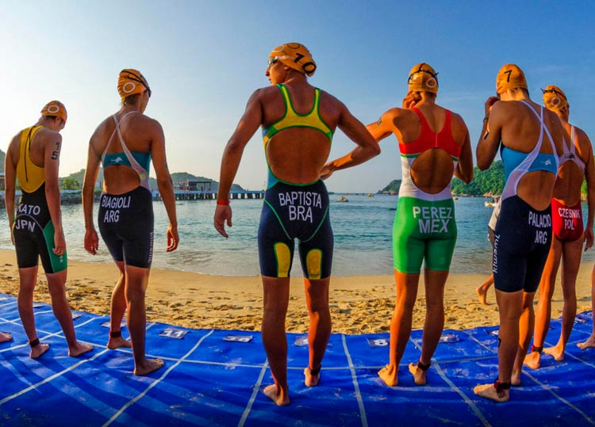
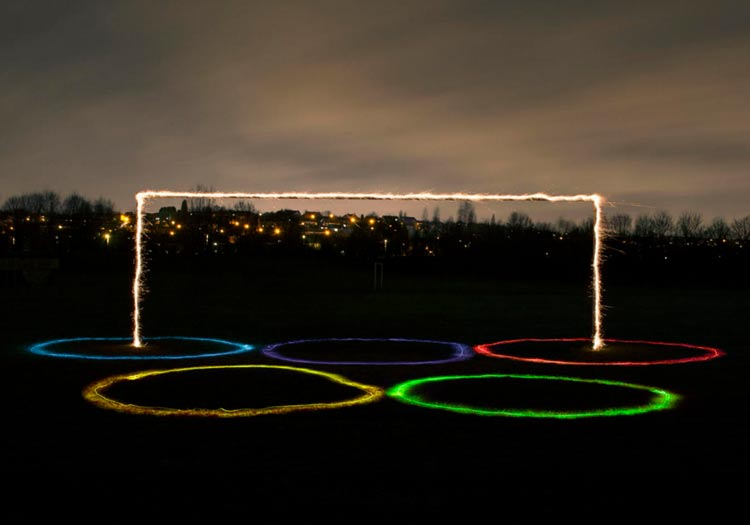

在社会生活的很多方面，都是有等级、有标签的，它用一些客观的标准对某个群体进行衡量并为其赋予一个定位。比如黑种人、黄种人、白种人，比如发达国家、发展中国家……但有一个领域，是完全没有等级标签的，那是一个完全自由、平等，靠力量和意志去竞争的国度。
体育的含义非常丰富，它不仅是广播体操、立定跳远、短跑长跑，也不仅是课本中的呼吸节奏、肌肉训练方式。它作为人类的一种社会活动，是在人们社会生产和生活中产生、演变的。它以人的全面发展为研究对象，通过身体锻炼增强人的体质，通过体育的社会实践促进社会发展和文明进步。
体育精神是由体育运动所孕育出来的意识形态，它超出了体育运动本身，成为了人们心中的一种信念和追求。奥林匹克运动会是全世界的体育盛会，这场盛会用实际行动将体育精神展示给世界。奥林匹克旗帜上的五个环象征着五大洲，展示一种世界大团结的精神；奥林匹克的口号“更高，更快，更强”，则是强调拼搏与进取的精神。在这个体育的世界没有人特殊，不分宗教、种族、国籍、性别，有的只是自由、团结、进取的体育精神。
2013年8月23日，联合国大会的193名成员一致同意将4月6日设为体育促进发展与和平国际日。男单世界排名第一焦科维奇作为运动员代表进行了发言。这位正在为美网做最后备战的塞尔维亚人说，体育“可以消除怀疑和仇恨”，可以帮助生活不幸的年轻人通过发扬公平竞赛、团队协作以及尊重对手的精神取得成功。
联合国大会主席耶雷米奇将这一决议描述为“历史性的”，表示这意味着人们认识到“体育具有吸引、调动和激励全世界人民的独特力量……同时可以作为无比强大的发展工具”。
朋友圈“炫风”不止，最近，除了晒对象、晒娃之外又多了一类——晒运动。好像不出去跑两步、健个身、练练瑜伽，和朋友都没话题了。春回大地、万物复苏，走出去锻炼身体吧！
1、每年的4月6日是体育日，设立节日的最初目的是帮助生活不幸的年轻人通过发扬公平竞赛、团队协作以及尊重对手的精神取得成功；
2、体育精神是积极向上的正能量，运动也能让人感觉到快乐，快快动起来吧！